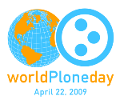

World Plone Day 2009

World Plone Day (全球 Plone 日) 是由 Plone 社群自發舉辦的推廣活動，第二屆全球 Plone 日訂在 2009 年 4 月22 日舉行，全世界五大洲超過 28 國家地區加入這項活動，台北是列名的城市之一。
本活動由國泰綜合醫院醫療資訊中心和中央研究院資訊科技創新研究中心自由軟體鑄造場贊助舉辦，活動邀請到國泰醫院劉致和主任，介紹醫院與 Plone 網站的應用，電子相簿(e-portfolio) 醫療應用，文件流程控管 (workflow) 等，另外 Python 社群同好胡崇偉亦會在現場分享 buildout 與 OpenFoundry 開發工具的結合。邀請志同道合的朋友，踴躍參加共襄盛舉！
* 活動時間：2009 年 4 月 22 日 (週三) 18:30 - 21:00
* 活動地點：台北市仁愛路四段 280 號 - 國泰綜合醫院 本館三樓 第三會議室
* 活動方式：演講，實機操作示範，同好交流聯絡資料
* 活動網址：https://wiki.python.org.tw/WorldPloneDay
You may be interested in the following articles:
- 2008/11/07 World Plone Day in Taipei - 2008-10-16